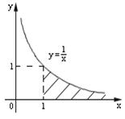

П 26.1 №2
Вычислите или установите расходимость несобственного интеграла .
РЕШЕНИЕ:
.
- площадь фигуры, ограниченной осью
, линией , прямой
, .
Ответ:

Расходится
 , линией , прямой
, линией , прямой  , ., линией , прямой , ., линией , прямой , .
, ., линией , прямой , ., линией , прямой , .